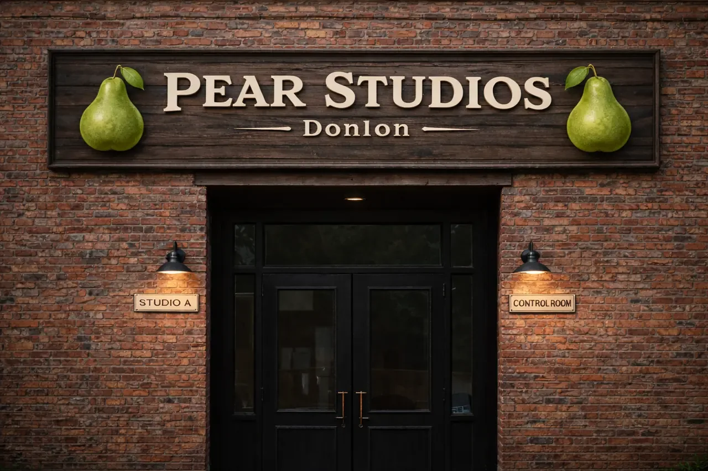
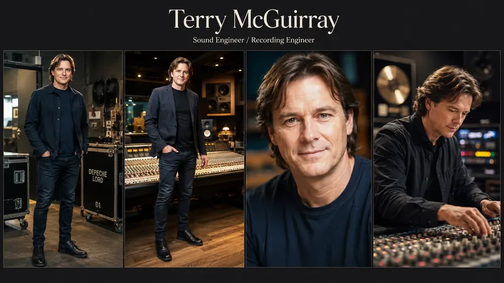
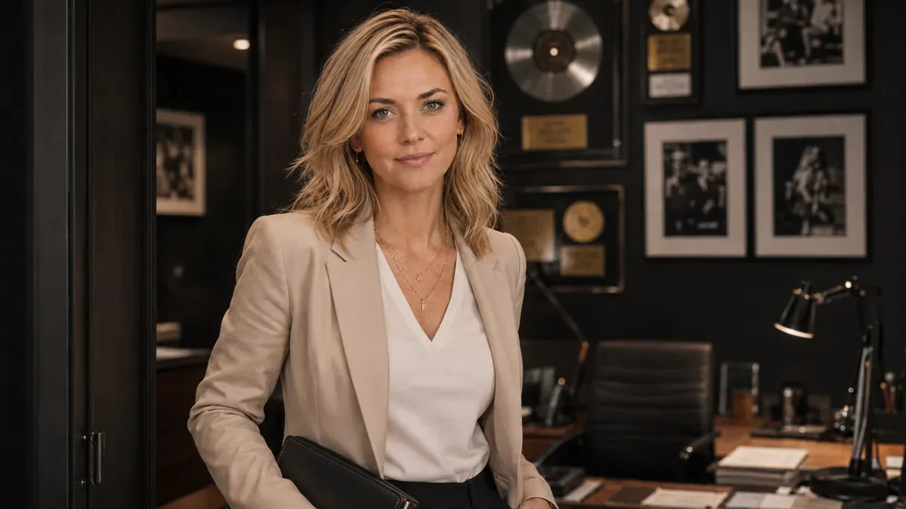
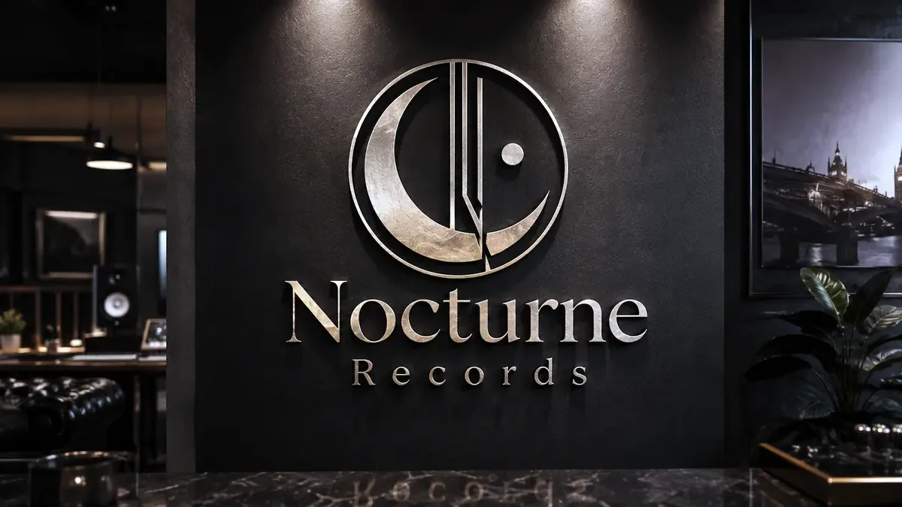
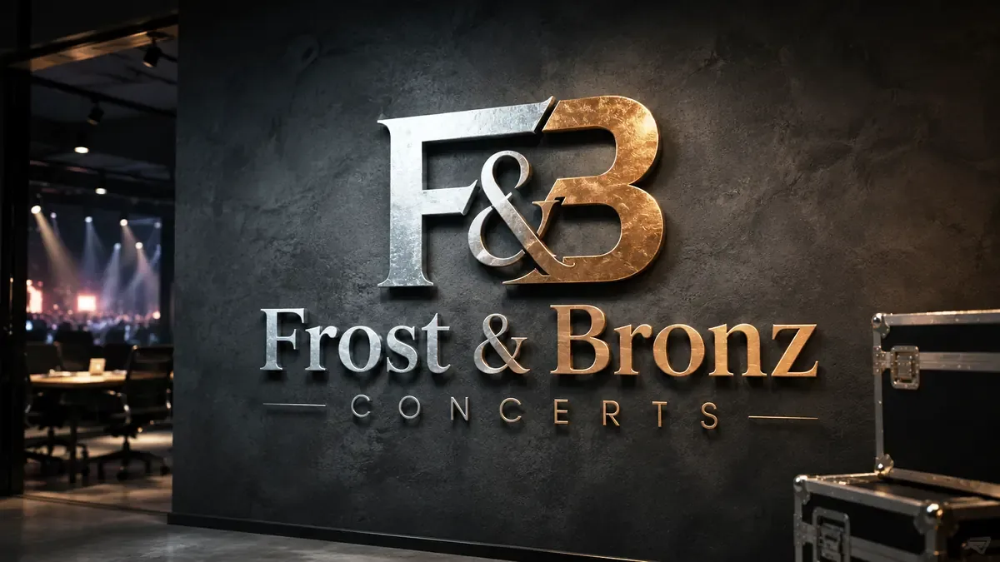

Sound of Lines wurde am 02.08.2025 als YouTube-Kanal für KI-basierte Musik gegründet. Die Songs entstehen aus eigenen Texten und werden mithilfe moderner KI-Tools musikalisch umgesetzt.
Eine musikalische Reise durch verschiedene Genres – jede Stilrichtung mit eigenem Charakter, Klang und Ausdruck.
Interpreten: u.a. Echoheart & Nightpulse
Channel Two
Rewind
Rewind wurde am 18.11.2025 als eigenständiger YouTube-Kanal ins Leben gerufen. Der Fokus liegt klar auf der musikalischen Epoche von 1980 bis 2000.
Eigene Texte, umgesetzt mit modernen KI-Tools – inspiriert vom Sound der 80er und 90er.
Interpreten u.a.: Depeche Lord – Darkwave / Darkpop zwischen Melancholie und mechanischer Präzision.
Sound of Lines – Interpreten
Songs & Videos
The Velvet Echoes
Eine zeitlose Playlist, das farbenreiche 1964-TV-Studio-Revival der Velvet Echoes. Ob mehrteilige Medleys, Vintage-Studioaufnahmen oder Storyvideos — diese Playlist verbindet Harmonie, Charme und den Geist einer vergangenen Ära.
Echoheart verbindet emotionale Rockballaden mit epischer Weite, kraftvollen Gitarren und einer Atmosphäre zwischen Verletzlichkeit und Aufbruch. Die Songs reichen von ruhigen, nachdenklichen Momenten bis zu großen Hymnen voller Energie, Hoffnung und innerer Stärke. Cineastische Piano-Linien, breite Refrains und moderne Rock-Dynamik schaffen Musik für Herz, Kopf und große Bühnen.
Nightpulse 2025 – Von Schatten zu Neon. Die offizielle Sammlung aller Nightpulse-Releases – tiefe elektronische Reisen zwischen Rhythmus und Emotion. Analoge Wärme trifft auf cineastische Tiefe. Jeder Beat erzählt eine Geschichte.
Tauche ein in die Welt von NAYLAH – jede ihrer Songs erzählt eine Geschichte. Von gefühlvollen Balladen über leidenschaftlichen Pop bis zu rhythmischem Hip-Hop – ihre Musik ist eine Reise durch Liebe, Selbstfindung und echte Emotion.
Von staubigen Westernstädten bis zu endlosen Prärien — moderne Country-Geschichten voller Freiheit, Sehnsucht, Heimatgefühl und offenem Horizont. Akustische Balladen, Duette mit Herz und klassische Western-Vibes treffen hier auf warmen, zeitlosen Country-Sound.
Spüre den Rhythmus der lateinamerikanischen Seele. Von der Leidenschaft der Bachata bis zur Energie des Merengue nehmen dich Diego und Marisol mit auf eine Reise voller Feuer, Romantik und karibischem Rhythmus.
Tauche ein in die Welt der keltischen Klänge und Geschichten. Celtic Chronicles erzählt uralte Sagen und Legenden – in Liedern voller Mystik, Sehnsucht und zeitloser Schönheit.
Diese Playlist vereint düstere Gothic-Songs und Darkwave-Tracks mit starken weiblichen und männlichen Lead-Vocals. Dunkle Gitarren, treibende Drums und atmosphärische Synths verbinden sich mit mystischen Melodien und intensiven Refrains.
Ein Weg durch Stille, Licht und Gedanken. Ethan Vale erzählt in seinen Songs vom Suchen und Finden, vom Loslassen und Weitergehen. Ruhig, ehrlich, echt.
Von mitreißenden Mallorca- und Party-Songs bis zu tiefgehenden, poetischen Schlager- und Popsongs – deutsche Musik in allen Facetten. Mitsing-Hits, Sommerstimmung und gefühlvolle Texte.
Darkwave / Darkpop zwischen Melancholie und mechanischer Präzision. Kalte Synthflächen, klare Strukturen und eine Stimme, die Distanz und Emotion zugleich trägt.
Official Tracks
Die offiziellen Studioveröffentlichungen von Depeche Lord – von großen Songs mit Sogkraft bis zu den dunkleren, kühleren Stücken der Reihe.
Teil der offiziellen Depeche Lord World Tour 2026 – weitere Konzerte werden fortlaufend veröffentlicht.
The Band
Vier Freunde, vier gleichberechtigte kreative Stimmen, ein gemeinsamer Sound. Depeche Lord entsteht aus Stimme, Synths, Gitarre, Rhythmus, Texten und Melodien – ohne Hierarchie, ohne Beiwerk.
Eliot Reeves
Vocals, Keys
Verbindet Stimme und Klangstruktur. Schreibt, formt und trägt Songs.
David McLean
Keys, Synths, Vocals
Gestaltet Klangräume und Tiefe. Arbeitet mit Flächen, Sequenzen und Melodien – ergänzt die Stimme und erweitert das Fundament der Songs.
Dylan Cole
Guitar
Prägt Struktur und Dynamik. Seine Gitarrenlinien definieren Richtung und sind wichtiger Teil des Gesamtklangs.
Brian Rix
Drums, Programming
Treibt die Songs nach vorne. Kombiniert organisches Spiel mit elektronischer Präzision und sorgt für den Puls, der alles zusammenhält.
Origin Story
Sie hatten keinen Plan. Sie hatten nichts. Vier Freunde. Kein Geld. Keine Sicherheit. Niemand, der an sie glaubte. Nur ein Sound, den sie nicht ignorieren konnten. Kalte Nächte in einem kaputten Van. Leere Taschen. Auftritte für ein warmes Essen in Bars, in denen niemand zuhört. Drei Betrunkene im Raum – und sie spielten trotzdem, als würde es zählen. Es ging nie darum, eine Band zu werden. Es ging darum, sich selbst etwas zu beweisen. Sie gingen weiter, weil sie keine Wahl hatten. Mexiko war kein Traum – es war die Entscheidung zu überleben. Wärmere Nächte. Ein bisschen mehr Hoffnung. Kleine Bühnen wurden größer. Ein Auftritt wurde ein Festival. Und irgendwann standen sie vor Tausenden. Und genau dort änderte sich alles. Nicht die Musik. Sondern der Druck. Alles wurde lauter. Schneller. Größer. Und plötzlich ging es nicht mehr um: „Schaffen wir das?“ sondern „Bleiben wir wir selbst?“ An diesem Punkt haben sie sich etwas geschworen: Kein Ego. Keine Fassade. Kein Vergessen. Depeche Lord wurde nie erschaffen, um zu beeindrucken. Sondern um echt zu sein. Nicht perfekt. Nicht glatt. Sondern ehrlich. Denn sie wussten: Ruhm ist nicht das Ziel. Er ist nur der Preis, den man zahlt. Und sie waren bereit, ihn zu zahlen. Gemeinsam.
Interviews & Quotes
Eliot Reeves – Lead Vocals
„Wir gingen Wege die wir nie kannten, deren Ende nicht sichtbar war und doch hatten wir ein Ziel. Wir wußten nicht wohin uns unsere Füsse tragen würden und ob wir jemals ankommen. Niemand hat an uns geglaubt ausser wir selbst. Verstehen sie wie hart das ist ist, keiner hat uns etwas zugetraut, aber wir Vier waren Eins und das hat am Ende den Ausschlag gegeben. Wir sind angekommen.“ Rolling Glass – Interview, 2026
David McLean – Synthesizer / Keys / Sound Design
„Wir wollten nie Trends hinterherlaufen…“ Music on Top – Livestream, 2026
Dylan Cole – Guitar / Textures
„Wie kommen sie eigentlich zu ihren Texten?“ „Nun, es gibt mehr Love Songs auf der Erde wie Liebe, wir dachten dann machen wir es eben anders. Wir schreiben über Dinge in denen Liebe vorkommt, aber wir beschreiben sie nicht als vollkommen, denn auch Liebe ist nie vollkommen. Wir schreiben über Dinge die jeder in seinem Leben kennt, weil auch wir ein Leben mit diesen Dingen haben. Und die sind nicht immer schön.“ Music Echo – Interview
Brian Rix – Drums / Programming
„Wenn man vergisst wo man herkommt, leugnet man seine Vergangenheit. Aber ohne Vergangenheit ist man nicht derjenige der man heute ist.“ Press Interview – Backstage, Berlin
Studio – Terry McGuirray
„Wir haben uns auch oft im Studio gestritten das bleibt nicht aus, jeder will etwas beitragen. Über allem thronte aber Terry McGuirray unser Toningeneur. Der saß bei einer Tasse Kaffee und hörte sich das an. Irgendwann zog er einen Regler hoch, dieser schrille Ton machte uns fast taub und er fragte, sollen wir den auch einbauen? Das hat uns gerettet.“ Studio Session – Recording Notes
Behind the Songs
Sechs Song-Entstehungen aus der Welt von Depeche Lord — als kleine Zitate, Erinnerungen und Momentaufnahmen der Band.
Love Is Not Always Truth
„Ich denke das darin viel Wahrheit steckt, jeder kennt diese Sitution in der die Träume einer großen Liebe platzen. Wir haben nur die Realität beschrieben.“
— Eliot Reeves, Lead Vocals
The Price We Pay
„Dass wir nach Mexico wollten war keine freie Entscheidung oder würden sie frierend mit drei Freunden ewig im engen kleinen Bus wohnen? In Mexico wäre es wenigstens warm. Wir hatten doch nichts zu verlieren. Wir standen vor dem Schalter der Airline und hofften unser letztes Geld würde für die Tickets reichen. Brian Rix’ Mutter hatte uns noch etwas zugesteckt. Als wir ankamen und diesen Truck kauften sahen wir die mitleidigen Blicke der Umstehenden. Wir haben nie wieder in unserem Leben ein Fahrzeug gesehen was so fertig und gleichzeitig so zuverlässig war. Und wenn man das alles so erlebt hat ist man für immer dankbar für das was passiert ist, es war der Weg den wir gingen weil niemand an uns geglaubt hat ausser wir selbst. Also Glauben zahlt sich aus.“
— Eliot Reeves, Lead Vocals
The Chaos in My Head
„Das ist ein schwieriges Thema, wir waren auf Tournee, wir mussten ins Studio, wir fühlten uns irgendwie verbrannt, aber wir funktionierten. Keiner hat es bemerkt, denn wir waren ja da, haben alles gegeben. Diesen Zustand wollte ich beschreiben. Fertig, aber keiner hat es je bemerkt.“
— Eliot Reeves, Lead Vocals
The Business Of Lies
„Ich saß eines Tages und wollte einen Text für einen neuen Song schreiben, David McLean kam herein und fragte was machst du gerade? Ich zeigte ihm das leere Blatt. Er meinte, ich habe gerade das schwachsinnige Video eines Influencers gesehen. Zwei Stunden später war der Text für The Business Of Lies fertig. Danke Bruder.“
— Eliot Reeves, Lead Vocals
Tokyo / Yellow Submarine Moment
„Nun, wir Vier sind alle große Fans der besten Band der Welt die es mal gab und gelb ist eine schöne Farbe. Was bietet sich noch an wenn man in Tokyo Auftritt und ein Video macht, richtig, das Land in dem Manga eine große Rolle spielt. Das war kein PR Gag, es war eine Hommage an Japan.“
— David McLean, Synthesizer / Keys / Sound Design
Venezuela Girl
„Nun, es gibt im Leben Momente in denen man sich einer Person verbunden fühlt. Es trennt einen Vieles, Entfernung, Kultur, Sprache und trotzdem entsteht etwas was eigentlich nicht sein dürfte, was vollkommen irreal ist und trotzdem passiert es. Das alles habe ich verarbeitet im Text und ja ich liebe sie. My Venezuela Girl.“
— Eliot Reeves, Lead Vocals
Staff & Umfeld
Menschen, Orte und Partner hinter Depeche Lord. Jede Karte zeigt die Funktion im gemeinsamen Gefüge – ohne die Bandwelt mit unnötigen Nebenschauplätzen zu überladen.

Pear Studios
Recording Home · Donlon
Das kreative Zentrum der Band: analog geprägte Technik, große Aufnahmeräume und ein Ort, an dem Ideen nicht präsentiert, sondern erarbeitet werden.

Terry McGuirray
Sound & Recording Engineer
Terry hält Klang, Technik und Banddisziplin zusammen. Hinter der Scheibe ist er derjenige, der Euphorie von einer wirklich brauchbaren Aufnahme unterscheidet.
Miles Winters
Management
Der ruhige Stratege im Hintergrund. Er schützt die kreative Freiheit der Band und organisiert den Teil der Musikwelt, mit dem die vier selbst möglichst wenig Zeit verlieren wollen.

Emma Hollis
PR & Communications
Emma steuert Öffentlichkeit und Medienkontakte. Ihre Linie: nicht ständig sichtbar sein, sondern im richtigen Moment mit der richtigen Geschichte.

Nocturne Records
Label · Manchester
Das Label begleitet Veröffentlichungen und Promotion, ohne die musikalische Identität der Band in ein vorgegebenes Marktformat zu pressen.

Frost & Bronz Concerts
Tour & Live Production
Booking, Logistik, Bühne und visuelle Umsetzung: Die Agentur überträgt die Welt von Depeche Lord in große Live-Räume.
Archive Gallery
Eine bewusst kleine Auswahl aus dem großen Depeche-Lord-Bildarchiv. Die Galerie lädt Bilder erst beim Öffnen der Rubrik und bleibt dadurch trotz umfangreichem Ausgangsmaterial schlank.
Pear Studios
Studioarbeit, Technik und die Menschen hinter den Aufnahmen.
World Tour
Ausgewählte Bühnen und Reisemomente – nicht jede Stadt, sondern starke Stationen.
Press & Media
PR-Arbeit, Presseräume und die manchmal absurde öffentliche Erzählung rund um die Band.
Fans & Offstage
Begegnungen abseits der Bühne: Ankünfte, Signings und ruhige Stadtmomente.
Production & Milestones
Bühnenkonzepte, Partner und besondere Momente der Bandentwicklung.
Pear Studios
Der Ort, an dem Klang, Streit, Pausen und Entscheidungen zusammenkommen.